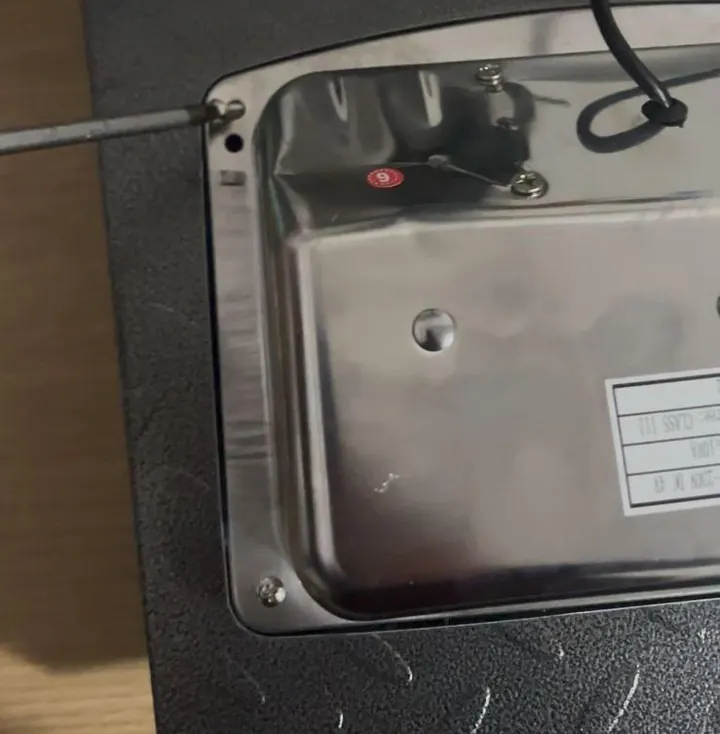
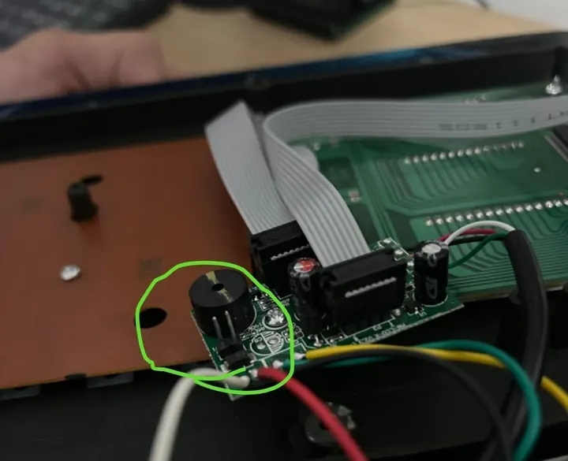
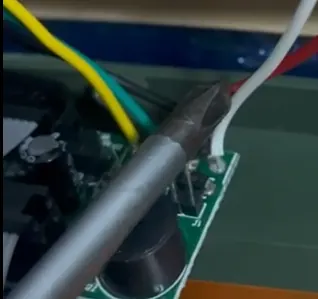
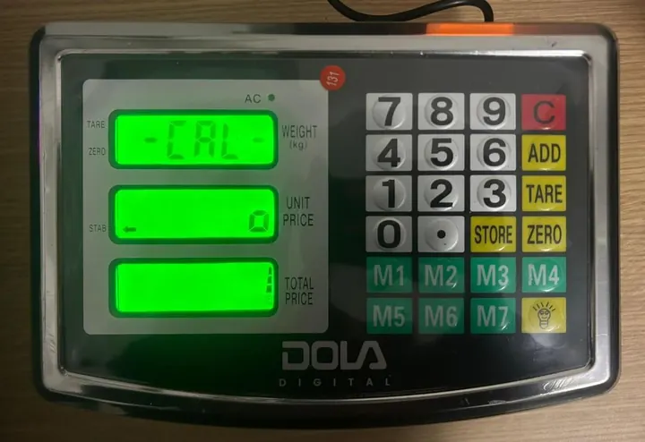

Soporte para clientes
Guía de calibración
Paso a paso para recalibrar tu balanza vos mismo, sin costo. Si te trabás en algún paso, escribinos por WhatsApp.
Antes de empezar
Necesitás un peso de referencia que sepas exactamente cuánto pesa: pesas de gimnasio o un paquete cerrado de harina o arroz. Con 20 kg o más, la calibración queda mucho más exacta.
Los pasos
Encendido y cero
Con la plataforma vacía, encendé la balanza y esperá que los 3 visores marquen 0. Anotá cuántos dígitos hay después del punto (por ejemplo 12.45 tiene 2 y 13.545 tiene 3): lo vas a usar en los pasos siguientes.
Código de acceso
Marcá el código 3658 y presioná TARE. Si no entra en calibración, seguí la sección Si la balanza no entra en calibración y después volvé al paso 2.
Inicio de configuración
El visor muestra 0 en el centro. Presioná 1 y después TARE.
Peso de referencia
El visor muestra 2. Poné el peso conocido sobre la plataforma (por ejemplo, 20 kg de pesas) y presioná TARE.
Valor del peso
El visor muestra 3. Escribí cuánto pesa lo que pusiste: el peso sin el punto decimal, con la cantidad de decimales que anotaste en el paso 1. Con 2 decimales: 20 kg (20.00) → 2000 · Con 3 decimales: 20 kg (20.000) → 20000Presioná TARE. [Confirmar con Nicolás los valores exactos]
Capacidad máxima
El visor muestra 4. Escribí la capacidad de tu balanza de la misma forma: sin el punto y con la misma cantidad de decimales. Con 2 decimales: 300 kg (300.00) → 30000 · Con 3 decimales: 300 kg (300.000) → 300000Presioná TARE. [Confirmar con Nicolás los valores exactos]
Decimales
El visor muestra 5. Presioná 2 o 3 según los decimales que anotaste en el paso 1, y después TARE. Tiene que coincidir con los ceros que agregaste al escribir el peso y la capacidad en los pasos 5 y 6: si usaste 2000 y 30000, elegí 2; si usaste 20000 y 300000, elegí 3. Si no coincide, la balanza pesa mal.
Precisión y listo
El visor muestra 6. Presioná 5 y terminá con TARE. La balanza ya está calibrada.
Si la balanza no entra en calibración
Antes de abrir el tablero
Desenchufá la balanza y apagala. Si no estás seguro, escribinos por WhatsApp antes de hacerlo.
[Nicolás define: ¿abrir el tablero según esta guía mantiene la garantía?]
Abrí el tablero
Sacá los 4 tornillos de la parte de atrás del tablero y destapalo con cuidado, sin tocar el circuito ni otros componentes.
Hacé el puente
Con un destornillador, hacé puente en el punto que marcan las fotos de abajo.
Encendé con el puente
Mientras mantenés el puente, prendé el tablero con el botón lateral hasta que suene. Si no sale, apagalo, esperá unos segundos y probá de nuevo.
Volvé al paso 2
Cuando el visor muestre -CAL-, cerrá el tablero y volvé al paso 2 de la guía.

1. Los 4 tornillos de atrás 
2. El punto del puente, marcado 
3. El puente con el destornillador 
4. El visor muestra -CAL-
¿Necesitás ayuda?
Si no podés calibrarla siguiendo estos pasos, escribinos y te guiamos.